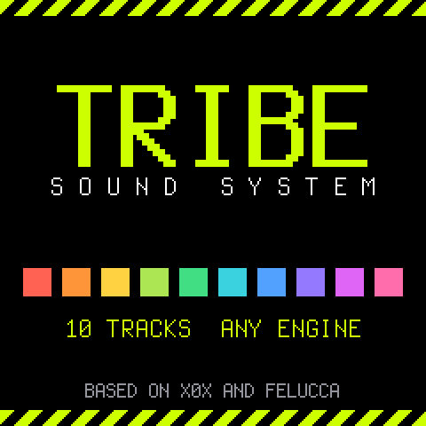
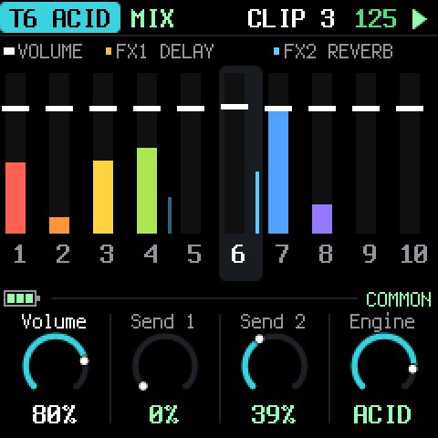

What's new
The newest version first. Install it with the web installer; the manual covers everything in detail.
0.3 beta
Highlights
- Sixty-four clips per track, in four banks of sixteen: OCT- and OCT+ on HOME move between the banks.
- Clip menu: hold a clip key for about half a second to copy the track's clip into it, or to empty it.
- Song mode (CLIPS, KNOB 4): a track plays its clips one after another, from the clip it is on. LOOP starts again; ONE SHOT stops at the first empty clip.
- Capture: while a track plays, the notes you play on ARP or REC are kept. SAVE, then REC, writes them into the clip on screen and saves it.
0.1 beta
The first public version of TRIBE, a fork of X0X that trades its five fixed parts for ten tracks that can play any engine.

Highlights
- Ten tracks, any engine on any track: two kicks, the 909 and 808 voices, and the 303.
- Sixteen clips per track, launched from HOME at the end of the pattern or at once.
- Per-clip sequencer settings: 16, 32 or 64 steps, six rates including triplets, four directions, swing.
- Scatter effects on the second row of keys while it plays: loops, reverse, gate, crush, distortion, ring, filters.
- Two master effects, FX 1 and FX 2, each a reverb, delay, drive, distortion, fuzz, wavefolder, crusher, decimator, ring modulator, chorus, flanger, phaser, tremolo or comb, fed by every track's two sends.
- Four master knobs (the MASTER pot and three encoders) that you assign to the volume, the DJ filter and its resonance, the amount of either effect, or the tempo.
- An always-on master compressor and limiter, set in GLO.

Playing
- ARP turns the keyboard into a keyboard for the selected track, with an arpeggiator (up, down, up-down, random) and a transposition mode.
- REC quantises what you play to the track's own steps.
- A 303 LFO on any of its parameters, saved with the clip.

Saving
- SAVE opens a pick: the tracks whose clip changed and GLO blink; press one to save it, SAVE again to save everything.
- A clip you changed and did not save comes back as it was when you launch it again.
- What a MASTER knob does is never saved: the pot's position is read when it starts.

Known limits
- Beta software: it has been tested in a simulator and in the browser emulator more than on the FM-1, and ten tracks of dense 303s can overload the FM-1's processor. GLO shows the CPU load.
- There is no MIDI yet.